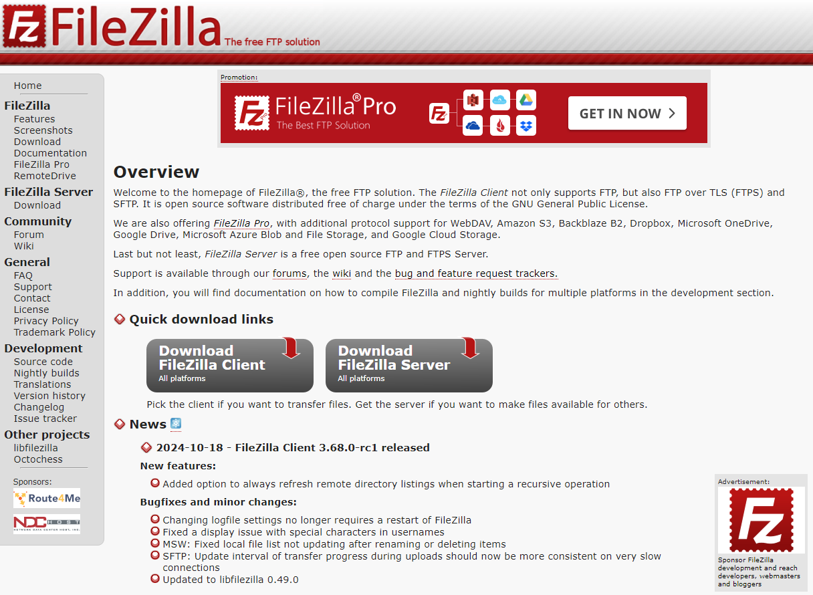
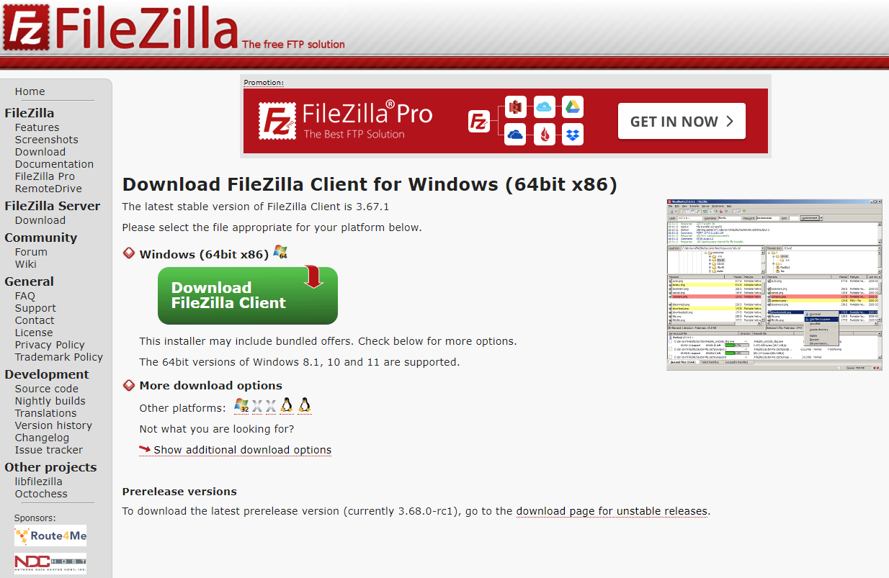
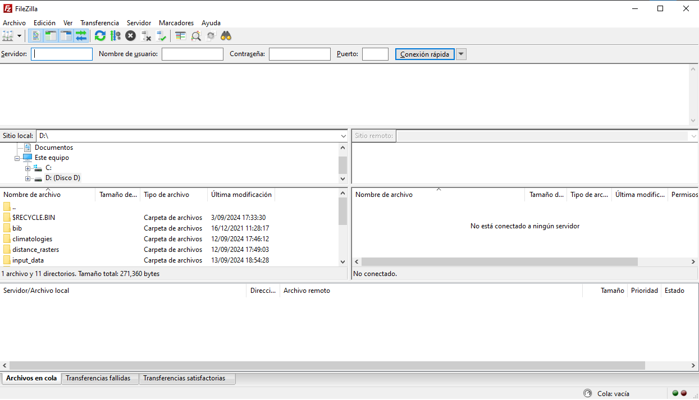
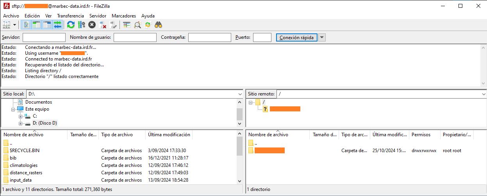
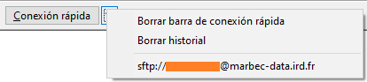
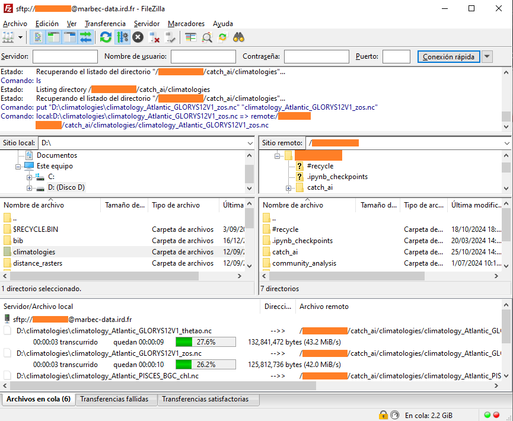
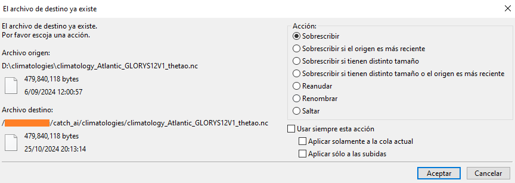

Gestión de archivos en marbec-data
¿Cómo gestionar archivos y carpetas desde y hacia marbec-data?
Créditos de la imagen: Declan Sun en Unplash
Manejando archivos desde/hacia marbec-data
Crear una carpeta de trabajo compartida
[Contenido en preparación]
Enlazar una carpeta de trabajo a marbec-gpu
[Contenido en preparación]
Gestionar archivos entre marbec-data y nuestra PC (FileZilla)
Instalando FileZilla y conectándonos a marbec-data
La manera más sencilla de mover (copiar, cortar y pegar) archivos desde nuestra PC hacia alguna de nuestras carpetas de trabajos compartidas o hacia nuestra carpeta de usuario de marbec-gpu es a través del software (gratuito) FileZilla. Para descargar el instalador, basta con ir a su sitio web oficial https://filezilla-project.org/ y seleccionar el botón Download FileZilla Client.

Luego, por defecto se nos ofrecerá descargar la versión correspondiente al sistema operativo (SO) en donde estemos ejecutando nuestro navegador, pero siempre podremo elegir la versión más adecuada en la sección More download options.

En los últimos años, se ha ido incorporando al mercado de PCs los procesadores con arquitectura ARM. El ejemplo más reciente y famoso es la serie Mx de Apple (e.g. M1); sin embargo, en los últimos meses también han aparecido laptops con procesadores ARM (de la marca Snapdragon, por ejemplo). Un software compilado para una arquitectura ARM no funcionará en una arquitectura x86 (que es la arquitectura fabricada por marcas como Intel o AMD) y viceversa, por lo que siempre será importante conocer no solamente qué SO lleva nuestra PC (Windows, MacOS o Linux), sino también la arquitectura de nuestro procesador.
Una vez descargado el archivo, bastará con ejecutarlo dejando la mayor parte de opciones por defecto (salvo aquellas que nos ofrezcan instalar algún programa adicional que no necesitemos, e.g. Chrome). Luego de ello, podremos ejecutar el programa y obtendremos un entorno que lucirá así:

Lo siguiente que haremos será establecer una conexión a marbec-data. Para ello, en la parte superior, completaremos los siguientes campos:
- Servidor: marbec-data.ird.fr
- Usuario: nuestrousuario
- Contraseña: nuestracontraseña
- Puerto: 22
Si todo va bien, en el panel inmediato inferior se mostrará un mensaje indicado que la conexión ha sido exitosa. Además, en los dos paneles inferiores siguientes a la derecha se mostrará aquellas carpetas ya enlazadas y disponibles en nuestra cuenta de marbec-data.

No es necesario iniciar sesión cada vez que ingresemos nuevamente a FileZilla. Si decidimos que deseamos que guarde nuestro inicio de sesión, podremos obviar los pasos anteriores dando click a la pequeña flecha a la derecha de Conexión rápida y seleccionando nuestro inició de sesión guardado. Por supuesto, el permitir que se guarden nuestras credenciales de inicio de sesión SOLO debe ocurrir en nuestra PC de uso personal.

¡Y eso es todo! En los paneles de la izquierda, podremos navegar en los directorios de nuestra PC, mientras que en los paneles de la derecha podremos hacerlo en los de marbec-gpu y marbec-data.
Copiar archivos y carpetas
Será tan sencillo como arrastrar el elemento entre los paneles izquierdo y derecho. El proceso iniciará y en el panel inferior (el último) se mostrará las transferencias en cola, las completadas y las fallidas.

Así mismo, si en algún momento FileZilla detecta que hay elementos repetidos, nos mostrará una ventana pequeña con múltiples opciones disponibles (sobreescribir y omitir, verificar diferenencias en tamaños o nombres, aplicar la opción seleccionada a futuros casos en la cola de transferencia, etc.).

Gestionar archivos dentro de marbec-data
Si bien el explorador del entorno web de marbec-data ofrece las opciones de copiar, pegar, eliminar, etc., no es un método eficiente cuando nuestros archivos son medianos o grandes (>10 MB). A continuación, se mostrará cómo realizar estas operaciones desde Terminal.
Copiar-pegar
Para esto, la manera más sencilla es a través del comando cp y haciendo uso de los comandos de navegación citados en este post (e.g. .. para indicar una carpeta anterior). La sintaxis básica es la siguiente: cp ruta/de/origen ruta/de/destino, pero existen diferentes casos posibles:
Copiar un archivo dentro de la misma carpeta, pero con un nombre distinto (crear duplicado):
cp archivo1.csv archivo1-dup.csvCopiar un archivo hacia otra carpeta:
cp ruta/de/archivo1.csv carpeta/de/destinoCopiar más de un archivo hacia otra carpeta:
cp ruta/de/archivo1.csv ruta/de/archivo2.csv carpeta/de/destinoCopiar una carpeta en otra carpeta:
cp ruta/de/carpeta1 ruta/de/carpeta2 --recursiveocp ruta/de/carpeta1 ruta/de/carpeta2 -r
Por defecto, cp sobreescribirá cualquier archivo con el mismo nombre. Para evitarlo, es posible añadir la opción -n del siguiente modo: cp ruta/de/archivo1.csv ruta/de/destino -n
Cortar-pegar (y también renombrar)
Será muy similar a lo anterior, pero a través del comando mv:
Renombrar un archivo (dentro de la misma carpeta):
mv archivo1.csv archivo2.csvMover un archivo hacia otra carpeta:
mv ruta/de/archivo1.csv carpeta/de/destinoMover más de un archivo hacia otra carpeta:
mv ruta/de/archivo1.csv ruta/de/archivo2.csv carpeta/de/destinoMover una carpeta hacia otra carpeta:
mv ruta/antigua/carpeta ruta/nueva/carpeta
Borrar
Para esto, utilizaremos el comando rm de la siguiente manera:
Borrar un archivo:
rm ruta/de/archivo.csvBorrar una carpeta (y todo su contenido):
rm ruta/de/carpeta -r
Si bien dentro de Terminal siempre es posible cancelar una orden usando el atajo Ctrl+C (o Cmd+C en MacOS), una vez que se ejecuta el comando rm y éste culmina su trabajo, no hay manera de revertir lo borrado ni recuperarlo desde alguna papelera de reciclaje, así que ten mucho cuidado al usarlo.